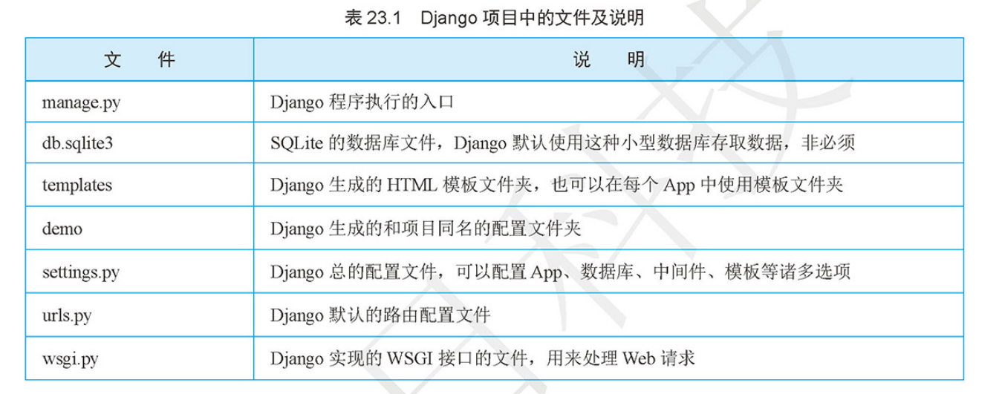
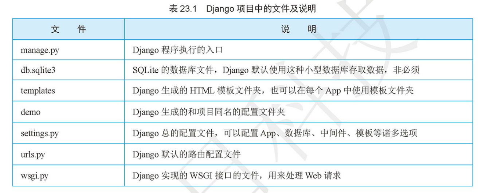

Contents
22.4.2. Django框架的使用¶
创建一个Django项目¶
- 项目存放目录为：
D:\GitHub\Webproject - 1.创建environments目录用于放置虚拟环境
C:\Users\18793> virtualenv D:\GitHub\Webproject\venv
Using base prefix 'c:\\users\\18793\\anaconda3'
No LICENSE.txt / LICENSE found in source
New python executable in D:\GitHub\Webproject\venv\Scripts\python.exe
Installing setuptools, pip, wheel...
done.
- 2.使用如下命令激活环境
D:\GitHub\Webproject\venv>d:\GitHub\Webproject\venv\Scripts\activate
(venv) D:\GitHub\Webproject\venv>cd ..
(venv) D:\GitHub\Webproject>
- 3.使用“django-admin”命令创建一个项目
(venv) D:\GitHub\Webproject>django-admin startproject demo
(venv) D:\GitHub\Webproject>
(venv) D:\GitHub\Webproject>cd demo
#进入虚拟环境安装django2.0
(venv) D:\GitHub\Webproject\demo>pip install django==2.0
- 4.使用pychrm打开demo项目，查看目录结构
 

#运行项目
python manage.py runserver
#为Django项目生成数据表，创建账户名和密码
python manage.py migrate #执行数据库迁移生成数据库
python manage.py createsuperuser #按照提示输入账户和密码，强度复合一定的规则要求

D:\GitHub\Webproject\demo>python manage.py createsuperuser
Username (leave blank to use '18793'): hujianli
Email address: 1879324764@qq.com
Password:
Password (again):
Superuser created successfully.
运行项目,并访问
http://127.0.0.1:8000/admin/
创建App¶

D:\GitHub\Webproject\demo>python manage.py startapp app1
此时根目录下又多了一个"app1"的目录，如图：

- 将app1应用加入到项目中
修改setting文件
INSTALLED_APPS = [
'django.contrib.admin',
'django.contrib.auth',
'django.contrib.contenttypes',
'django.contrib.sessions',
'django.contrib.messages',
'django.contrib.staticfiles',
'app1',
]
import pymysql # 一定要添加这两行！通过pip install pymysql 设置在app1的__init__文件中
pymysql.install_as_MySQLdb()
DATABASES = {
'default': {
'ENGINE': 'django.db.backends.mysql',
'NAME': 'mysite',
'HOST': '192.168.1.1',
'USER': 'root',
'PASSWORD': 'pwd',
'PORT': '3306',
}
}
#生成迁移文件
python manage.py makemigrations
#迁移数据库，创建新表
python manage.py migrate
#了解Django命令的API
python manage.py shell
#### 启用交互命令
python manage.py shell
#创建数据 方式1
>>> from app1.models import Person,Order
>>> p = Person(first_name="hujianli",last_name="胡")
>>> p.save()
方式2
p = Person.objects.create(first_name="kebi",last_name="hu")
## 查询数据
>>> Person.objects.all()
<QuerySet [<Person: Person object (1)>, <Person: Person object (2)>]>
>>> Person.objects.get(first_name="hujianli")
<Person: Person object (1)>
## 查询指定条件的数据
>>> Person.objects.filter(first_name__exact="hujianli")
<QuerySet [<Person: Person object (1)>]>
>>> Person.objects.filter(first_name__exact="kebi")
<QuerySet [<Person: Person object (2)>]>
>>> Person.objects.filter(id__gt=1)
<QuerySet [<Person: Person object (2)>]>
>>> Person.objects.filter(id__lt=100)
<QuerySet [<Person: Person object (1)>, <Person: Person object (2)>]>
## 修改查询到的数据
>>> p = Person.objects.get(first_name="hujianli")
>>> p.first_name = "huxiaojian"
>>> p.last_name = "xiaojian"
>>> p.save()
## 删除数据
>>> Person.objects.get(id=1).delete()
(1, {'app1.Person': 1})
数据模型（models）¶
在app1的models.py中添加如下代码
from django.db import models # 引入django.db.models模块
class CreateUpdate(models.Model): # 创建抽象数据模型，同样要继承于models.Model
# 创建时间，使用models.DateTimeField
created_at = models.DateTimeField(auto_now_add=True)
# 修改时间，使用models.DateTimeField
updated_at = models.DateTimeField(auto_now=True)
class Meta: # 元数据，除了字段以外的所有属性
# 设置model为抽象类。指定该表不应该在数据库中创建
abstract = True
class Person(CreateUpdate): # 继承CreateUpdate基类
first_name = models.CharField(max_length=30)
last_name = models.CharField(max_length=30)
class Order(CreateUpdate): # 继承CreateUpdate基类
order_id = models.CharField(max_length=30, db_index=True)
order_desc = models.CharField(max_length=120)
python manage.py makemigrations
python manage.py migrate